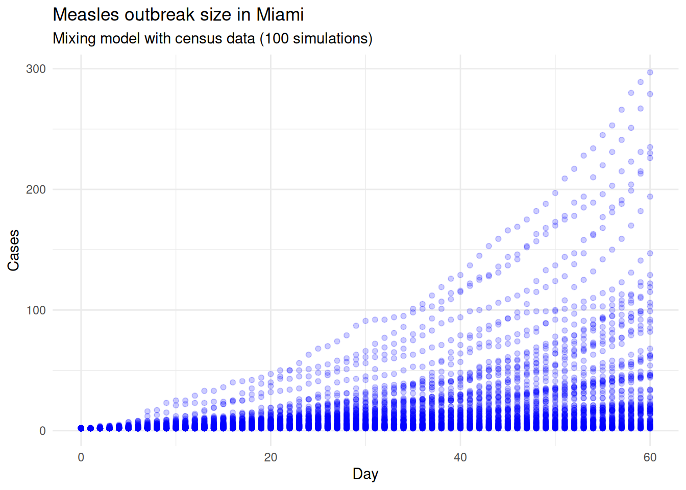
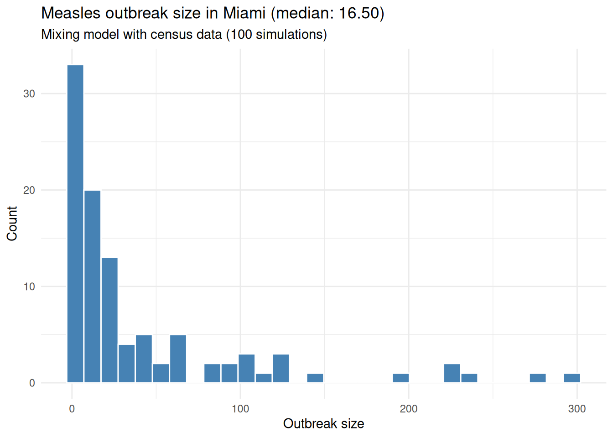

library(measles)
library(data.table)
params <- list(
city = "Miami",
max_pop = 10000,
nthreads = 4,
seed = 8812,
ndays = 60,
nsims = 20
)Measles outbreak simulation in Miami
Note
The original version of this document is part of the ID Cup project and can be found at https://github.com/EpiForeSITE/idcup. This version is adapted for the InsightNet 2026 course and may contain edits for clarity or relevance to the course content.
CautionWork in progress
This scenario simulation is a work in progress. We are still reviewing the model, assumptions, and parameters. Please be mindful of this when interpreting the results.
Preparing the environment
Pulling information about the city and population from the data files. The age distribution is county-level; for Miami, the data are from Miami-Dade County. The mixing matrix is based on EpiStorm (Litvinova et al. 2025) survey data, which provides age-based contact patterns. When the data file contains multiple city matrices, we use the matrix corresponding to params$city; otherwise, we use the single matrix included with the workshop materials.
# Population matrix
census_age <- fread("data/census_age.csv")[city == params$city]
population <- fread("data/population.csv")[city == params$city, Population]
# Mixing matrix (age-based, from EpiStorm survey data)
mixing_matrices <- readRDS("data/mixing_matrix.rds")
if (is.list(mixing_matrices) && !is.matrix(mixing_matrices)) {
if (!params$city %in% names(mixing_matrices)) {
stop(sprintf("No mixing matrix found for %s.", params$city))
}
mixing_matrix <- mixing_matrices[[params$city]]
} else {
mixing_matrix <- mixing_matrices
}
# Retrieving vaccination rate
vacc_rate <- fread("data/mmr.csv")[city == params$city, vacc_rate] / 100The total population in the city data, 487014, exceeds the workshop target population size (10000). The age distribution will be scaled down to keep the live example small.
N <- min(params$max_pop, sum(population))
census_age[, total := ceiling(total/sum(total) * N)]
census_age[, vacc_rate := vacc_rate]
N <- sum(census_age$total)calib_scale <- calibrate_mixing_model(
contact_matrix = mixing_matrix,
target_rep_number = 15,
infectious_period_days = 4,
transmission_prob = 0.2
)Baseline scenario
# Finding the hospitalization rate for
# a 10% hospitalization probability:
# P(hosp) = hosp_r / (hosp_r + rec_r)
# => hosp_r = P(hosp) (hosp_r + rec_r)
# = P(hosp) * hosp_r + P(hosp) * rec_r
# => hosp_r = P(hosp) * rec_r / (1 - P(hosp))
h_rate <- 0.1 * (1 / 3) / (1 - 0.1)
measles_model <- ModelMeaslesMixing(
n = N,
prevalence = 1,
transmission_rate = 0.2,
vax_efficacy = 0.97,
contact_matrix = mixing_matrix * calib_scale,
hospitalization_rate = h_rate,
hospitalization_period = 7,
# Intervention parameter
quarantine_period = 14,
quarantine_willingness = 0.9,
isolation_willingness = 0.9,
isolation_period = 4,
# Vaccination parameters (this will be replaced)
prop_vaccinated = 0.95,
# Contact tracing parameters
days_undetected = 2,
contact_tracing_success_rate = 0.8,
contact_tracing_days_window = 4,
rash_period = 3
)# Adding the entities to the model
add_entities_from_dataframe(
model = measles_model,
entities = census_age,
col_name = "age_group",
col_number = "total",
as_proportion = FALSE
)For Miami, the vaccination rate is approximately 88.10%.
# Creating the distribution function
dist_fun <- distribute_tool_to_entities(
prevalence = census_age$vacc_rate,
as_proportion = TRUE
)
# Setting the distribution function
measles_model |>
get_tool(0) |>
set_distribution_tool(dist_fun)For the initial cases, we will use 2 active cases and distribute them randomly across the population.
get_virus(measles_model, 0L) |>
set_distribution_virus(
distfun = distribute_virus_randomly(
prevalence = 2,
as_proportion = FALSE
)
)We can now run the simulations. The workshop defaults use 20 simulations and a maximum population of 10000 so the example can run quickly during a live session. For a fuller analysis, increase params$nsims and params$max_pop.
saver <- make_saver("outbreak_size", "hospitalizations", "transition")
measles_model |>
run_multiple(
ndays = params$ndays,
nsims = params$nsims,
seed = params$seed,
saver = saver,
nthreads = params$nthreads
)Starting multiple runs (20) using 4 thread(s)
_________________________________________________________________________
_________________________________________________________________________
||||||||||||||||||||||||||||||||||||||||||||||||||||||||||||||||||||||||| done.We can check the results of the simulations by summarizing the model:
summary(measles_model)________________________________________________________________________________
________________________________________________________________________________
SIMULATION STUDY
Name of the model : Measles with Mixing and Quarantine
Population size : 10009
Agents' data : (none)
Number of entities : 17
Days (duration) : 60 (of 60)
Number of viruses : 1
Last run elapsed t : 9.00ms
Total elapsed t : 59.00ms (20 runs)
Last run speed : 63.28 million agents x day / second
Average run speed : 201.12 million agents x day / second
Rewiring : off
Last seed used : 432123442
Global events:
- Quarantine process (runs daily)
Virus(es):
- Measles
Tool(s):
- MMR
Model parameters:
- (IGNORED) Vax improved recovery : 0.5000
- Contact tracing days window : 4.0000
- Contact tracing success rate : 0.8000
- Days undetected : 2.0000
- Hospitalization period : 7.0000
- Hospitalization rate : 0.0370
- Incubation period : 12.0000
- Isolation period : 4.0000
- Isolation willingness : 0.9000
- Prodromal period : 4.0000
- Quarantine period : 14.0000
- Quarantine willingness : 0.9000
- Rash period : 3.0000
- Transmission rate : 0.2000
- Vaccination rate : 0.9500
- Vax efficacy : 0.9700
Distribution of the population at time 60:
- ( 0) Susceptible : 10007 -> 9980
- ( 1) Latent : 2 -> 6
- ( 2) Prodromal : 0 -> 2
- ( 3) Rash : 0 -> 2
- ( 4) Isolated : 0 -> 0
- ( 5) Isolated Recovered : 0 -> 2
- ( 6) Quarantined Latent : 0 -> 3
- ( 7) Quarantined Susceptible : 0 -> 7
- ( 8) Quarantined Prodromal : 0 -> 0
- ( 9) Quarantined Recovered : 0 -> 0
- (10) Hospitalized : 0 -> 0
- (11) Recovered : 0 -> 7
Transition Probabilities:
- Susceptible 1.00 0.00 - - - - - 0.00 - - - -
- Latent - 0.85 0.10 - - - 0.04 - 0.01 - - -
- Prodromal - - 0.74 0.26 - - - - - - - -
- Rash - - - 0.40 - 0.40 - - - - 0.10 0.10
- Isolated - - - - 0.50 0.50 - - - - - -
- Isolated Recovered - - - - - 0.91 - - - - - 0.09
- Quarantined Latent - - 0.04 - - - 0.93 - 0.04 - - -
- Quarantined Susceptible 0.03 - - - - - - 0.97 - - - -
- Quarantined Prodromal - - - - 0.50 - - - 0.50 - - -
- Quarantined Recovered - - - - - - - - - - - -
- Hospitalized - - - - - - - - - - - 1.00
- Recovered - - - - - - - - - - - 1.00Extracting and plotting the results
# Extracting the results
ans <- measles_model |>
run_multiple_get_results(
freader = data.table::fread
)
# Converting into data.table format for convenience
outbreak_size <- ans$outbreak_size |> as.data.table()
hospitalizations <- ans$hospitalizations |> as.data.table()
transition <- ans$transition |> as.data.table()Transition
# Preprocessing
transition sim_num date from to counts
<int> <int> <char> <char> <int>
1: 1 0 Susceptible Susceptible 10007
2: 1 0 Susceptible Latent 2
3: 1 1 Susceptible Susceptible 10007
4: 1 1 Latent Latent 1
5: 1 1 Latent Prodromal 1
---
6965: 20 60 Isolated Recovered Recovered 2
6966: 20 60 Quarantined Latent Quarantined Latent 2
6967: 20 60 Quarantined Susceptible Quarantined Susceptible 24
6968: 20 60 Quarantined Prodromal Quarantined Prodromal 1
6969: 20 60 Recovered Recovered 14# To get a starting point
tmat <- get_transition_probability(measles_model) * 0
# Collapsing the data
t_totals <- transition[, .(total = sum(counts)), by = .(from, to)]
tmat[
as.matrix(t_totals[, .(from, to)])
] <- t_totals$total
draw_mermaid_from_matrix(tmat) |>
plot()Outbreak size
# Plotting outbreak size over time
ggplot2::ggplot(
outbreak_size,
ggplot2::aes(x = date, y = outbreak_size)
) +
ggplot2::geom_point(
color = "blue",
alpha = 0.2,
size = 1.5
) +
ggplot2::labs(
title = paste("Measles outbreak size in", params$city),
subtitle = sprintf(
"Mixing model with census data (%i simulations)",
params$nsims
),
x = "Day",
y = "Cases"
) +
ggplot2::theme_minimal()
# Aggregating the final day
final_outbreak <- outbreak_size[date == max(date)]
median_outbreak_size <- median(final_outbreak$outbreak_size)
ggplot2::ggplot(final_outbreak, ggplot2::aes(x = outbreak_size)) +
ggplot2::geom_histogram(fill = "steelblue", color = "white") +
ggplot2::labs(
title = sprintf(
"Measles outbreak size in %s (median: %.2f)",
params$city,
median_outbreak_size
),
subtitle = sprintf(
"Mixing model with census data (%i simulations)",
params$nsims
),
x = "Outbreak size",
y = "Count"
) +
ggplot2::theme_minimal()`stat_bin()` using `bins = 30`. Pick better value `binwidth`.
We can save the results for further analysis.
fwrite(outbreak_size, sprintf("%s_outbreak_size.csv", params$city))
fwrite(hospitalizations, sprintf("%s_hospitalizations.csv", params$city))Session info
This document was generated using the {measles} R package version 0.3.1.0 and the {epiworldR} package version 0.15.1.0 on 2026-04-29. We used R version 4.5.3, running on Linux with x86_64 architecture.
References
Litvinova, Maria, Shelly Sinclair, Allisandra G. Kummer, et al. 2025. Epistorm-Mix: Mapping Social Contact Patterns for Respiratory Pathogen Spread in the Post-Pandemic United States. medRxiv. https://doi.org/10.1101/2025.11.20.25340662.